Cette unité de formation vise à fournir des informations sur :
Ce module aborde les grands thèmes de l’environnement (air, eau, sols, cadre de vie et nuisances, déchets) selon deux axes, celui des généralités sur les problèmes de chaque milieu et celui des aspects spécifiques des usines d’incinération de déchets dangereux, appelées dans notre métier UIDD.
D’autre part sont abordées de façon succincte la réglementation environnementale et la norme ISO 14001.
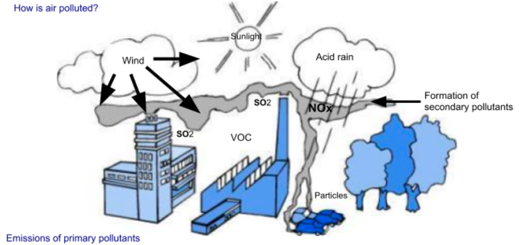
Fig. 1
L’air est un mélange de plusieurs gaz et il est principalement composé d’azote (78\ Certains polluants, présents en quantités infimes, peuvent entraîner des effets nuisibles à la santé. Plus la durée d’exposition au polluant est importante, plus ces effets risquent d’être aggravés. On parle de pollution atmosphérique lorsque certains composants sont présents dans l’air à des concentrations supérieures à la normale et qu’ils peuvent entraîner une modification du milieu naturel ou occasionner une gêne pour les êtres vivants, notamment l’être humain. Les phénomènes de pollution atmosphérique peuvent être d’échelle locale, régionale ou mondiale.
En milieu urbain, la circulation automobile et les activités industrielles sont les principaux responsables d’une pollution locale limitée à quelques dizaines de kilomètres autour des agglomérations. Certains phénomènes, comme les pluies acides ou la pollution à l’ozone, dépassent le cadre local et concernent une ou plusieurs régions (50 à 100 km, voire plus).
D’autres phénomènes plus complexes affectent l’atmosphère terrestre dans sa globalité. Les effets de cette pollution globale sont ressentis sur le long terme (élévation de la température de l’air, trou dans la couche d’ozone, etc.). Le schéma de la page précédente montre les principaux phénomènes de pollution atmosphérique.
L’Organisation mondiale de la santé (OMS) et l’Union européenne (UE) ont défini des valeurs-seuil (concentration maximale par unité de temps) à respecter pour de nombreux polluants atmosphériques. En France, plus de 550 sites, généralement situés dans les grandes agglomérations, mesurent en continu la concentration de plusieurs polluants. Le tableau suivant donne le résultat de la surveillance de quelques polluants en 1995 :
| Pollutant (chemical symbol) | Sources? Effects on health? | Effects on threshold values | WHO or EU in France (1995) | Air quality |
|---|---|---|---|---|
| Hydrochloric acid (HCl) | Chlorine industry and incineration of plastics | Irritations and disorders of respiratory tracts, eyes | — | Pollutant not monitored at national level |
| Suspended solids, dust | Combustion (diesel, heating) | Breathing disorders | 0.100 mg/m³ over 24 hours (EU) | 1/3 of sites do not satisfy this threshold |
| Carbon monoxide (CO) | Incomplete combustion reactions (engines, industry) | Cardiovascular diseases, attention disorders and eyesight | 10 mg/m³ over 8 hours (WHO) | 40% of sites exceed this threshold several days each year |
| Sulphur dioxide (SO₂) | Combustion of oil products (fuel oil, diesel) and coal | Respiratory tract irritations and disorders, eyes | 0.125 mg/m³ over 24 hours (WHO) | 1/4 of sites do not satisfy this threshold |
| Nitrogen oxides (NOₓ) | Combustion (industry, vehicles) | Respiratory disorders at least once | 0.150 mg/m³ over 24 hours (WHO) | 11% of sites have exceeded this threshold |
| Lead (Pb) | Petrol vehicles, industry | Toxicity for the nervous system, kidneys, eyes | 0.0005 mg/m³ over 1 year (WHO) | Threshold satisfied |
| Other heavy metals — Chromium (Cr), Copper (Cu), Cadmium (Cd), Nickel (Ni), Mercury (Hg) | Industry, incineration | Multiple toxicities: carcinogenic effects, kidney disorders, damage to the nervous system | Variable depending on each pollutant | Not measured |
Fig. 2
1 mg = 0.001 g = 10⁻³ g — Example: 0.0005 mg/m³ = ½ millionth of a gram per cubic metre (threshold value for lead)
Remarque : Les termes généraux sont définis plus en détail dans les fiches de définition jointes à la fin de chaque unité. Triez ces feuilles à la fin du dossier par ordre alphabétique.
Les rejets gazeux industriels sont généralement canalisés et extraits par des cheminées qui ont pour rôle de disperser les polluants et d’éviter leur retombée directe au niveau du sol.
La bonne dispersion de ces polluants dépendra :
La réglementation relative aux UIDD impose de calculer la hauteur de cheminée et la vitesse d’extraction en prenant en compte :
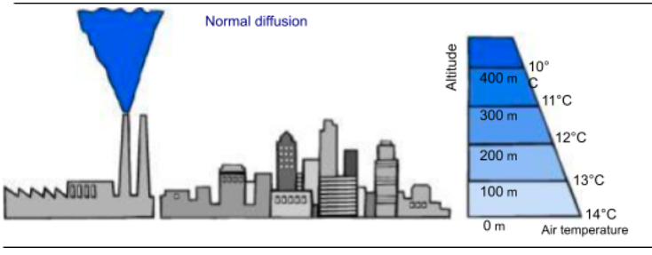
Fig. 3
Diffusion normale (Source : La Qualité de l'air, notre patrimoine vital, (La qualité de l'air, notre patrimoine vital) Ministère français de l'Environnement, 1989)
La bonne dispersion des polluants peut être perturbée ou la concentration en polluants peut être augmentée en fonction de conditions météorologiques particulières :
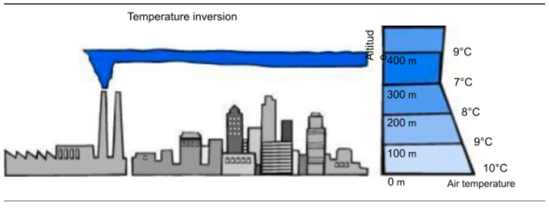
Fig. 4
Inversion de température (Source : La Qualité de l'air, notre patrimoine vital, (La qualité de l'air, notre patrimoine vital) Ministère de l'Environnement, 1989)
Rappel : composés polluants issus de l'incinération avant traitement des fumées :
Le traitement des fumées des UIDD, qui répond aux normes de rejet de l’arrêté du 25 janv. 1991 établies par le ministère de l’Environnement, permet une épuration très importante des différents polluants. Le tableau suivant représente les quantités en poids des différents polluants émis dans les gaz de combustion, valeurs exprimées en kilogramme (kg) pour une tonne de déchets incinérés, valeurs émises avant et après traitement :
Exemples de poids de polluants émis dans les fumées des gaz. (hypothèse calculée sur la base de 6000 m3 par tonne) :| Pollutants | Gaseous emissions from the incinerator [kg/t] (per tonne of incinerated waste) |
Gaseous emissions after processing [kg/t] (per tonne of incinerated waste) |
|---|---|---|
| Dust | 12 kg/t to 60 kg/t | 0.006 kg/t to 0.06 kg/t (6 g/t to 60 g/t) |
| Hydrochloric acid | 6 kg/t to 60 kg/t | 0.03 kg/t to 0.28 kg/t (30 g/t to 280 g/t) |
| Heavy metals (Hg, Cd) | less than 0.006 kg/t, i.e. less than 6 g/t | less than 0.0003 kg/t, i.e. less than 0.3 g/t |
| Sulphur dioxide (SO₂) | 6 kg/t to 36 kg/t | 0.06 kg/t to 1.7 kg/t |
| Nitrogen oxides (NOₓ) | 0.6 kg/t to 12 kg/t | 0.4 kg/t to 2.8 kg/t |
Fig. 5
Dioxines : les rejets étant très faibles, il est préférable d’exprimer les valeurs de rejets gazeux pour 100000 t de déchets incinérés, soit :Une autre manière de comparer les valeurs des rejets gazeux est de présenter les quantités en poids des différents polluants émis dans les gaz de combustion en milligrammes (mg) par mètre cube de gaz rejeté à l’atmosphère.
| Pollutants | Gaseous emissions from the incinerator (before processing) in mg/m³ | Gaseous emissions after processing in mg/m³ | Purification rate |
|---|---|---|---|
| Dust | 2000 to 10000 mg/m³ | 1 to 10 mg/m³ | more than 95% |
| Hydrochloric acid (HCl) | 2000 to 10000 mg/m³ | 2 to 10 mg/m³ | more than 95% |
| Heavy metals (Hg, Cd) | 1 to 10 mg/m³ | less than 0.1 mg/m³ | more than 90% |
| Sulphur dioxide (SO₂) | 2000 to 6000 mg/m³ | 20 to 50 mg/m³ | more than 95% |
| Nitrogen oxides (NOₓ)¹ | 100 to 2000 mg/m³ | 70 to 200 mg/m³ | more than 90% |
| Dioxins¹ | 1 to 10 nanograms/m³ | less than 0.1 nanogram/m³ | more than 90% |
Fig. 6
¹ The purification rates indicated are only valid for plants with complementary smoke treatment units (not mandatory for existing plants)
1 milligram = 0.001 g = 10⁻³ g — 1 nanogram = 10⁻⁹ g = 10⁻⁶ mg — i.e. 0.1 nanogram/m³ = 10⁻¹⁰ g/m³ = 0.1 billionth of a gram per m³ discharged
Ainsi une nouvelle usine traitant 100000 t/an de déchets dangereux rejetterait dans l’atmosphère moins de 1/20 g de dioxine par an.
Rappelons brièvement les procédés de traitement les plus utilisés pour piéger ces polluants que nous étudierons dans les prochains modules (modules 9 et 10) :
| Pollutant | Treatment process |
|---|---|
| Dust | Baghouse filter, electrofilter |
| Hydrochloric acid (HCl) and sulphur dioxide (SO₂) | Chemical neutralisation with a reagent (e.g. powdered lime, milk of lime, bicarbonate, etc.) |
| Heavy metals | Dust removal Condensation |
| Nitrogen oxides (NOₓ) | Injection of catalytic ammonia or non-catalytic ammonia |
Fig. 7
La réglementation applicable aux UIDD impose des valeurs limites pour un grand nombre de polluants contenus dans les rejets. Les principaux polluants (HCl, SOx, poussières, monoxyde de carbone (CO), Carbone Organique Total (COT) et Oxydes d’Azote(NOx)) doivent être mesurés en continu.
Les mesures et le contrôle en continu des valeurs des polluants permettent à l’exploitant de vérifier le bon fonctionnement de son installation de traitement des fumées, de réajuster en permanence la quantité de réactifs nécessaires à la neutralisation et à l’épuration des gaz pollués (voir le détail de la réglementation dans les fiches de définition). Ainsi est limitée la quantité de polluants rejetés à l’atmosphère. D’autres composés, comme les métaux lourds, ne sont mesurés qu’une fois par an.
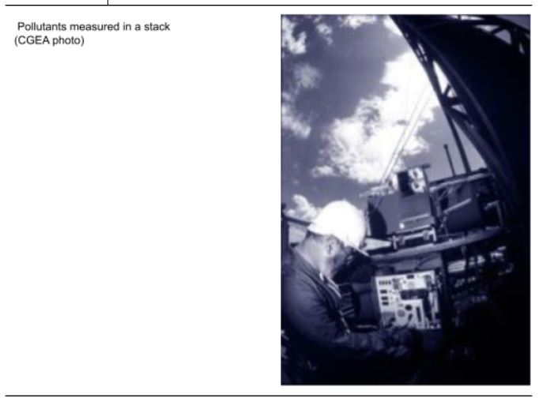
Fig. 8
Le tableau suivant présente quelques valeurs issues de la réglementation en vigueur :
| Pollutants | ELV — Daily mean | ELV — ½ hourly mean |
|---|---|---|
| Hydrochloric acid (HCl) | 10 | 60 |
| Hydrofluoric acid (HF) | 1 | 4 |
| Sulphur oxides (SOₓ) | 50 | 200 |
| Dust | 10 | 30 |
| Carbon monoxide (CO) | 50 | 100 |
| Total Organic Compounds (TOC) | 10 | 20 |
| Nitrogen oxides (NOₓ) | 200 | 400 |
| Total metals — Sb+As+Pb+Cr+Co+Cu+Mn+Ni+V | 0.5 | — |
| Mercury (Hg) | 0.05 | — |
| Cadmium + Thallium (Cd+Tl) | 0.05 | — |
| Dioxins & furans | 0.1 ng I-TEQ | — |
Fig. 9
ELV : Emission Limit Value — All values in mg/Nm³ for dry gas reduced to 11% O₂
Les mesures de dioxines sont délicates à réaliser. C’est la raison pour laquelle notre groupe a décidé d’équiper le Creed (Centre de recherche pour l’environnement, l’énergie et le déchet, situé à Limay, dans les Yvelines) d’un laboratoire de mesures de dioxines. Ce laboratoire réalise en France des prélèvements d’échantillon de fumées et des analyses.
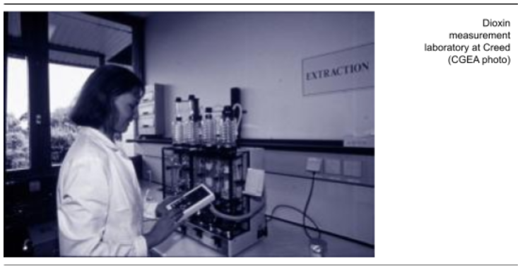
Fig. 10
D’autre part, en France, il existe une taxe parafiscale payable par les exploitants des usines sur leurs émissions polluantes à l’atmosphère. Cette taxe concerne les émissions suivantes :
L’Ademe (Agence de l’environnement et de la maîtrise de l’énergie) utilise les fonds collectés de cette taxe pour financer des actions et des investissements liés à la prévention et à la réduction de la pollution atmosphérique en France.
Les sources de pollution de l’air sont multiples (la circulation urbaine, le chauffage individuel, les activités industrielles…). Des bilans ont été établis et montrent comment les polluants émis par les UIDD, contribuent à la pollution de l’air.
Le tableau ci-dessous résume l’importance relative à ces rejets.
| Pollutants | (SO₂) Sulphur dioxide | (NOₓ) Nitrogen oxides | (HCl) Hydrochloric acid | Dust | Dioxins and furans |
|---|---|---|---|---|---|
| Relative importance of UIDD emissions | Very low | Very low | Very low | Very low | Very low |
Fig. 11
Omniprésente sur terre, on trouve l’eau sous cinq formes naturelles différentes :
L’eau circule entre ces différentes formes suivant le cycle naturel de l'eau. Nécessaire à la vie, l’eau se retrouve à tous les échelons de la chaîne alimentaire et constitue le principal constituant des êtres vivants (70\
Les nappes phréatiques peuvent être alimentées directement par l’infiltration des eaux de ruissellement ou de façon indirecte lorsqu’elles sont séparées du sol par une couche imperméable. Suivant la nature géologique du sol, les eaux des nappes peuvent avoir des compositions chimiques très variables. Ces eaux sont généralement caractérisées par l’absence d’oxygène dissous, une grande pureté bactériologique, une faible turbidité (non transparence de l’eau), une température et une composition chimique constante. L’eau des nappes est souvent potable. En cas de pollution accidentelle, toutes ces caractéristiques peuvent être fortement modifiées et il devient alors très difficile de récupérer la pureté originelle de la nappe.
Eau de surfaceElles ont pour origine des nappes profondes (sources, ruisseaux) ou des eaux de ruissellement issues des bassins versants. La composition chimique des eaux dépend de la nature des terrains traversés par l’eau durant son parcours. Par échange à la surface eau-atmosphère, ces eaux se chargent en gaz dissous (oxygène, azote, gaz carbonique). Parmi les caractéristiques des eaux de surfaces, il faut noter :
Il y a pollution de l’eau s’il y a modification de ses caractéristiques et si ce phénomène risque de remettre en cause les usages qui en sont faits (potabilité, survie des poissons, etc.). Cette pollution est d’origine naturelle ou humaine. La pollution naturelle peut être due à des précipitations importantes ou aux conséquences d’une longue période de sécheresse. Les principales sources de pollution d’origine humaine peuvent être classées comme suit :
Dans les eaux de surface, l’oxygène joue un rôle fondamental dans le maintien de la vie aquatique et dans l’auto-épuration. L’oxygène représente environ 35\
Pollution organiqueD’origine naturelle, urbaine ou industrielle, la pollution organique est caractérisée par la présence de matières organiques biodégradables (feuilles mortes…) ou synthétiques (solvants, hydrocarbures, détergents…). Ces matières organiques ont tendance à se dégrader naturellement en consommant de l’oxygène. Deux paramètres fréquents permettent de caractériser l’altération en oxygène par pollution organique : la DCO et la DBO (voir fiches de définition).
Matières en suspension (MES)Les petits éléments non dissous dans l’eau diminuent la transparence de l’eau (on dit aussi que la turbidité de l’eau augmente). Les MES comprennent des minéraux, des matières organiques de taille importante, des virus, des bactéries, etc. En diminuant le rayonnement solaire à travers l’eau, les MES perturbent et diminuent l’activité des organismes qui constituent la base de la chaîne alimentaire. En se déposant au fond des eaux calmes, ces solides peuvent emprisonner des micro-polluants. Enfin, ils peuvent également provoquer l’asphyxie des poissons par colmatage des ouïes.
NeutralitéLe pH est un paramètre chimique mesuré sur une échelle de 0 à 14. Il permet d’évaluer le degré d’acidité d’une solution.
| Acid | Neutral | Alkaline | |||
|---|---|---|---|---|---|
| Examples | Lemon juice | Apple juice | — | Drinking water | Washing-up liquid |
| pH | 2 | 4–5 | 7 | 8–9 | — |
Fig. 12
Lorsque le pH est inférieur à 6 ou supérieur à 9, la vie des poissons est mise en danger, voire impossible. Si le pH d’une solution est égal à 7, on dit que la solution est neutre.
TemperatureC’est un facteur important de la vie aquatique. Une élévation de la température due à des activités industrielles peut avoir de graves conséquences sur le métabolisme des organismes vivants. Au-dessus de 22°C, on observe la mort de certaines espèces aquatiques, comme les truites.
Métaux lourdsMême à faible concentration, leur danger provient surtout de leur capacité à s’accumuler dans les chaînes alimentaires.
Notons également deux autres types de pollution non détaillés ici : la pollution azotée et la pollution phosphorée, significatives pour de nombreuses industries et pour l’agriculture, mais ne concernant pas directement l’activité des UIDD.
Qualité des eaux de surfaceEn France, plus de 1500 points de mesure permettent de suivre la qualité des cours d’eau. Selon les résultats des mesures effectuées sur de nombreux paramètres, à chaque cours d’eau est attribué un indice de qualité.
Il existe cinq indices de qualité :
Le tableau ci-dessous donne des exemples de teneurs limites pour chaque classe de qualité :
| Quality rating | Class 1A | Class 1B | Class 2 | Class 3 | Unclassified |
|---|---|---|---|---|---|
| Dissolved oxygen (mg/l) | >7 | 5 to 7 | 3 to 5 | 1 to 3 | <1 |
| BOD (mg/l) | <3 | 3 to 5 | 5 to 10 | 10 to 25 | >25 |
| COD (mg/l) | <20 | 20 to 25 | 25 to 40 | 40 to 80 | >80 |
Fig. 13
Le ministère de l’Environnement fixe un objectif de qualité pour chaque cours d’eau. Par exemple, une rivière actuellement classée 2 (passable) peut avoir un objectif de qualité de classe 1B. Ces objectifs de qualité servent de référence aux administrations pour fixer les valeurs limites de rejet de chaque installation.
La pollution d’une nappe souterraine est souvent due à une contamination du sol situé à proximité. Lorsqu’un site industriel se trouve à proximité d’une nappe sensible, un réseau de surveillance de la qualité de l’eau souterraine est exigé par l’administration. Des piézomètres, sortes de mini puits forés dans le sol, permettent d’effectuer des prélèvements de l’eau de la nappe et de vérifier par analyse la qualité des eaux souterraines En France, la qualité des eaux potables est réglementée et très suivie. L’Organisation mondiale de la santé (OMS), la Communauté économique européenne (CEE) et la France ont défini des valeurs recommandées, ainsi que des valeurs maximales à ne pas dépasser pour près de 100 paramètres chimiques. Le tableau ci-dessous reprend les valeurs limites recommandées pour divers métaux lourds :
| Drinking water quality: maximum permissible concentrations of heavy metals | |||
|---|---|---|---|
| Cadmium | Mercury | Arsenic | Lead |
| 0.005 mg/l | 0.001 mg/l | 0.050 mg/l | 0.050 mg/l |
Fig. 14
Après traitement éventuel (bac de décantation, correction de pH), tous ces effluents sont rejetés vers le milieu naturel (rivière, fleuve) ou vers un réseau d’assainissement public raccordé à une station d’épuration collective. Certaines usines ne produisent pas d’effluents liquides.
Lorsque les effluents de l’UIDD sont rejetés vers le milieu naturel, les valeurs limites fixées par la Drire (Direction régionale de l’industrie, de la recherche et de l’environnement), organisme d’État chargé de vérifier l’application des normes de rejets, sont adaptées à la nature du cours d’eau et à son indice de qualité. Dans tous les cas, l’UIDD doit respecter les prescriptions de l’arrêté ministériel du 20 septembre 2002, notamment les paramètres suivants :
| Discharges into the natural environment (example requirements for a UIDD) | |
|---|---|
| Parameter | Maximum discharge value (concentration by mass, unfiltered samples) |
| 1 — Total suspended solids | 30 mg/l |
| 2 — Total Organic Carbon (TOC) | 40 mg/l |
| 3 — Chemical Oxygen Demand (COD) | 125 mg/l |
| 4 — Mercury and mercury compounds, expressed as mercury (Hg) | 0.03 mg/l |
| 5 — Cadmium and cadmium compounds, expressed as cadmium (Cd) | 0.05 mg/l |
| 6 — Thallium and thallium compounds, expressed as thallium (Tl) | 0.05 mg/l |
| 7 — Arsenic and arsenic compounds, expressed as arsenic (As) | 0.1 mg/l |
| 8 — Lead and lead compounds, expressed as lead (Pb) | 0.2 mg/l |
| 9 — Chromium and chromium compounds, expressed as chromium (Cr) | 0.5 mg/l (of which Cr⁶⁺: 0.1 mg/l) |
| 10 — Copper and copper compounds, expressed as copper (Cu) | 0.5 mg/l |
| 11 — Nickel and nickel compounds, expressed as nickel (Ni) | 0.5 mg/l |
| 12 — Zinc and zinc compounds, expressed as zinc (Zn) | 1.5 mg/l |
| 13 — Fluorides | 15 mg/l |
| 14 — Free CN | 0.1 mg/l |
| 15 — Total hydrocarbons | 5 mg/l |
| 16 — AOX | 5 mg/l |
| 17 — Dioxins and furans | 0.3 ng/l |
Fig. 15
Lorsque les effluents sont rejetés vers un réseau d’assainissement public, les valeurs de rejet sont généralement fixées en accord avec l’exploitant du réseau ou de la station municipale de traitement dans une convention de raccordement. Les prescriptions peuvent être moins contraignantes pour les MES et la DCO que celles indiquées ci-dessus. Exemple : quelques prescriptions de rejets de l’UIOM de Saran| Discharges into a collective drainage system (example requirements for a UIDD) | |||||
|---|---|---|---|---|---|
| pH | TSS | COD | BOD5 | Cadmium | Total heavy metals |
| From 5 to 8.5 | <500 mg/l | <1000 mg/l | <500 mg/l | 0.05 mg/l | <15 mg/l |
Fig. 16
Toutefois, pour les polluants qui ne peuvent être éliminés par la station municipale, comme les métaux lourds, les prescriptions de rejet de la convention sont identiques à celle de rejet vers le milieu naturel. Dans les deux cas, un ou plusieurs traitements d’eau au préalable sont nécessaires pour respecter les prescriptions de rejet (neutralisation, décantation, etc.).
Les eaux pluviales Les eaux de pluie sont généralement collectées séparément des eaux de process. Elles font l’objet d’un traitement minimal (débourbeur, déshuileur) avant rejet vers le milieu naturel. Parfois, un bassin de rétention permet de retenir toutes les eaux de pluie afin d’éviter les pollutions accidentelles du milieu récepteur (par exemple, en cas de déversement accidentel de fuel, acide, chaux). Enfin, certains points de collecte des eaux de pluie peuvent être raccordés au réseau des eaux de process pour traitement (exemple : eaux de pluie à proximité du poste de réception et stockage de la chaux). Fréquence des mesures Fréquence des mesures Selon les arrêtés préfectoraux, l’exploitant doit effectuer des mesures quotidiennes, hebdomadaires, mensuelles ou tous les six mois. Parfois, il est exigé un enregistrement en continu des débits, du pH et de la température des rejets.Comme l’air et l’eau, le sol est une ressource naturelle essentielle. S’il est pollué, le sol peut porter atteinte à la vie humaine, en affectant les récoltes ou, plus insidieusement, en contaminant les végétaux, les aliments ou l’eau. Des trois milieux (air, eau, sol), le sol est probablement le moins bien connu. En tant que milieu naturel, le sol assure quatre fonctions différentes :
L’infiltration des polluants lors de la contamination des eaux souterraines est explicitée à la figure ci-dessous.
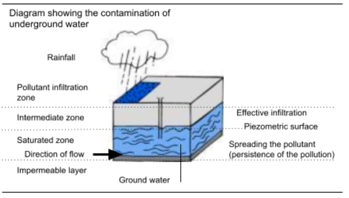
Fig. 17
L’approvisionnement en eau industrielle d’un site de production se fait par de multiples moyens (pompage en rivière, approvisionnement urbain, par exemple). Parfois, une part souvent importante provient de prélèvements directs dans la nappe phréatique à l’aplomb du site. C’est dire l’importance qu’il convient d’attacher au sol et au sous-sol d’un site industriel : toute pollution a une répercussion directe sur les approvisionnements du site et des communes, proches ou lointaines.
La réglementation française prévoit qu’autour de chaque captage d’eau potable, doit être définie une zone de protection dans laquelle des mesures spéciales sont prises afin d’éviter tout risque de pollution de la source.
La pollution des sols résulte de l’activité humaine. Elle se caractérise par la dégradation des capacités régulatrices du sol (protection des nappes souterraines, alimentation des végétaux, etc.) et est susceptible de provoquer une nuisance ou un risque pour les personnes ou pour l’environnement.
Les conséquences de cette pollution peuvent être importantes, par exemple lorsqu’une ressource en eau potable devient inutilisable ou lorsque l’usage du sol pour la culture devient limité ou impossible.
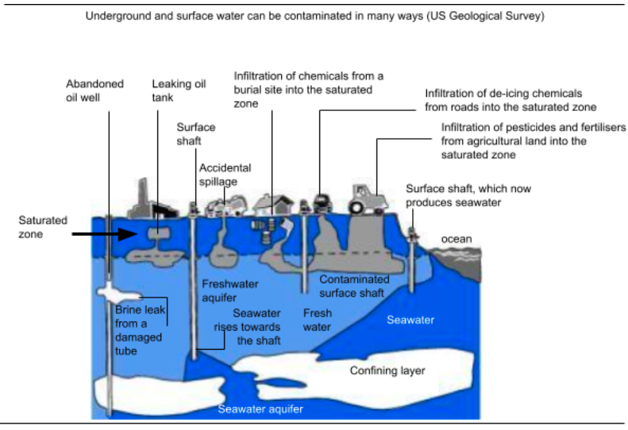
Fig. 18
La pollution du sol peut s’effectuer selon deux formes différentes :En France, il n’existe pas de valeurs-seuil à respecter pour la contamination des sols par les différents types de polluants. Une réglementation est en cours de préparation.
Les rejets atmosphériques des UIDD engendrent de faibles retombées particulaires de métaux lourds, dioxines et autres polluants contenus dans les fumées d’incinération. Ces retombées sont négligeables car diffuses. Des analyses régulières des sols et végétaux permettent de vérifier l’absence de concentration et d’accumulation dans les sols à proximité de l’UIDD. Les aspects liés aux risques de pollution des sols par les résidus de l’incinération (résidus d’épuration à des fumées, REFIDD, et mâchefers) seront abordés dans les prochains modules.
Les UIDD doivent éliminer les risques de déversement accidentel d’hydrocarbures, de réactifs chimiques ou d’autres produits dangereux pour le sol et l’eau. Pour éviter ces accidents, des moyens de rétention, des fosses étanches (cuvettes de rétention en béton) doivent être prévus et installés aux endroits de stockage et de manipulation (fosse de stockage des mâchefers, fosse de réception des déchets dangereux, rétention des stockage de déchets liquides …).
La qualité du cadre de vie prend une part de plus en plus importante dans nos sociétés modernes. Respirer un air sain, boire une eau potable et de qualité, s’alimenter avec des aliments sans risques pour la santé ne sont pas les seules préoccupations des ménages. D’autres aspects comme les odeurs, le bruit, la qualité paysagère de l’environnement sont à prendre en compte lors de la conception des UIDD et dans leur mode d’exploitation.
Le monde qui nous entoure est plein d'odeurs. Une multitude de molécules différentes mélangées à l’air que nous respirons, généralement à des concentrations extrêmement faibles, sont à l’origine des odeurs que nous percevons. Pour que ces molécules soient odorantes, il faut qu’elles réagissent avec la muqueuse nasale et que notre cerveau l’interprète comme une sensation olfactive. Cette dernière dépend de la nature de la substance odorante, et de sa concentration dans l’air que nous respirons.
Odeurs \& COV générés par l'UIDD Plusieurs sources de COV peuvent être détectées :Souvent, une bonne maîtrise des procédés et une organisation orientée vers la prévention permettent de réduire les nuisances potentielles. La réglementation relative aux odeurs impose généralement que l’UIDD ne doit pas générer des odeurs qui incommodent le voisinage. Parfois, lorsqu’un système de désodorisation est installé, l’arrêté d’exploitation précise des seuils de concentration à respecter en limite de propriété pour certains composés odorants.
Plus de 50\
Qu'est-ce que le bruit ?Le bruit est un phénomène acoustique produisant une sensation considérée comme désagréable ou gênante. Tout son est dû à une variation de la pression régnant dans l’atmosphère, engendrée par une source sonore. Cette variation de pression, même infime, est appelée pression acoustique. Le niveau sonore s’exprime en décibels (dB). Lorsqu’un bruit double d’intensité, le niveau sonore exprimé en décibels augmente de 3 dB. Si ce bruit triple d’intensité, le niveau sonore augmente de 5 dB. Le tableau ci-dessous donne des exemples de niveaux de bruit.
| Talking level | Auditory sensation | No. of dB | Indoor noise | Outdoor noise | Vehicle noise |
|---|---|---|---|---|---|
| Whispering | Very calm | 15 | Rustled by a gentle wind in a quiet garden | Light leaves | — |
| Normal speech | Normal noise | 60 | Large stores, Normal Conversation, Chamber music | Residential street | Motor boat |
| Difficult | Unpleasant | 95 | Forge | Street with heavy traffic, aeroplane at a short distance | Large propeller |
| Impossible | Painful | 120 | Engine test bench | A few meters away | Aircraft engines nearby |
Fig. 19
Source: Jean Laroche (inspector of classified sites in the Paris region), "Les méfaits du bruit", in Produits et Problèmes pharmaceutiques, 1970.
Bruit généré par l'UIDD Les sources possibles de bruit dans une UIDD sont multiples. On peut noter les exemples suivants :Le bruit du poste de travail dans l'UIDD ne doit pas dépasser 80 dB. Certains locaux et équipements plus bruyants doivent être insonorisés et les opérateurs doivent utiliser des dispositifs de protection spécifiques. Sur le plan environnemental, le bruit à l'extérieur du site est réglementé et ne doit pas dépasser des seuils variables selon les sites. Fréquemment, selon la réglementation, le niveau sonore généré par l'usine en bordure de propriété ne doit pas dépasser le bruit de fond extérieur de plus de 5 dB en journée en semaine (ce qui correspond à x3 le niveau sonore), et de 3 dB la nuit , les week-ends et jours fériés (x2 le niveau sonore). Cette notion de bruit supplémentaire généré par une installation est appelée émergence.
Par ailleurs, le niveau sonore maximum admissible en bordure de propriété est défini en fonction du type de zone dans laquelle se situe le site UIDD. Le tableau suivant donne les exigences applicables pour les installations situées dans une zone dominée par des opérations commerciales et industrielles.
| Noise: maximum permissible noise levels in a commercial or industrial area | ||
|---|---|---|
| Daytime, from 7:00 to 20:00 | Intermediate period | Nighttime, from 2:00 to 6:00 |
| 65 dB | 60 dB | 55 dB |
Fig. 20
Les installations industrielles modifient le paysage dans lequel elles s’insèrent. Visibles de près ou de loin par les personnes extérieures, il est important qu’elles soient maintenues dans un état optimal de propreté compte tenu du service qu’elles rendent.
Parmi les idées contribuant à une bonne conception d’une nouvelle usine, retenons les principes suivants :
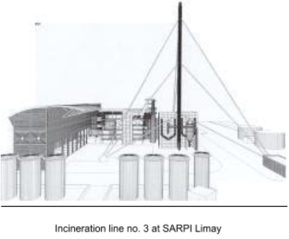
Fig. 21
L’incinération est, à l’heure actuelle, le moyen de traitement des déchets dangereux le mieux adapté pour respecter l’environnement. L’incinération permet de réduire l’impact potentiel des déchets, en les réduisant considérablement :
La combustion d’une tonne de déchets dangereux produit environ 50 à 100 kg de résidus d’épuration des fumées. Les REFIDD récupérés après dépoussiérage ou lavage des gaz sont des polluants potentiels du milieu naturel. Ils peuvent transmettre en cas de mauvaise gestion de leur élimination leur pollution au sol et à l’eau et atteindre ainsi les espèces végétales animales et bien sûr les êtres humains.
La composition des REFIDD est variable suivant la technique de neutralisation des gaz utilisée. Tous ces résidus présentent une forte solubilité. D’autre part on constate des teneurs en métaux lourds élevées notamment pour le plomb. L’eau est le vecteur principal d’une pollution accidentelle. Une lixivation accidentelle solubilise les polluants de ces résidus puis les dissémine dans le sol. Pour les rendre plus inertes il faut leur faire subir un traitement qui empêche que les polluants puissent être emportés par l’eau. Ainsi avant stockage en Centre de Stockage de Déchets Ultimes (CSDU) les REFIDD sont stabilisés en les solidifiant dans des réactifs solides et liquides de façon à obtenir un matériau solide comparable à du béton. Ces obligations sont décrites dans différents textes réglementaires.
Les mâchefersLa combustion d’une tonne de déchets dangereux produit environ 200 à 300 kg de résidus solides à la sortie des fours. Ces mâchefers se caractérisent par :
Le taux d’imbrûlés doit être inférieur à 5\
Les mâchefers déferraillés sont considérés comme des résidus ultimes et doivent donc être stockés en CSDU, tel quel ou après stabilisation.
Remarque : Concernant les mâchefers d’UIOM (Usine d’Incinération d’Ordures Ménagères), la circulaire ministérielle du 9 mai 1994 encourage et réglemente la valorisation des mâchefers. Si l’on souhaite valoriser les mâchefers, il faut procéder à une caractérisation pour les classer dans l’une des trois catégories possibles :
Cette caractérisation résulte de plusieurs analyses effectuées durant six mois. Après cette caractérisation, une analyse mensuelle doit être réalisée. Chaque mois on effectue la moyenne des sept dernières analyses ce qui permet de déterminer la catégorie des mâchefers (V, M ou S).
Concernant les mâchefers d’UIDD, cette possibilité de valorisation n’est pas offerte. Ils doivent obligatoirement aller en CSDU.
La réglementation française sur la protection de l’environnement s’articule autour de 2 dispositifs complémentaires :
La loi n° 76-663 du 19 juillet 1976 définit le cadre réglementaire applicable aux installations qui sont soumises soit à déclaration, soit à autorisation, et fournit la nomenclature officielle qui s’applique à chaque type d’activité, et un arrêté préfectoral d’autorisation d’exploitation. Ces installations sont suivies régulièrement par un inspecteur de la DRIRE. Celui-ci peut, s’il l’estime nécessaire, compléter le cadre législatif applicable à l’installation par des dispositions spécifiques, sous la forme de prescriptions complémentaires.
Plusieurs dizaines de textes réglementaires concernent complètement ou partiellement les activités d’incinération de déchets ménagers. L’organigramme ci-dessous présente de façon simplifiée les principaux textes applicables aux UIDD.
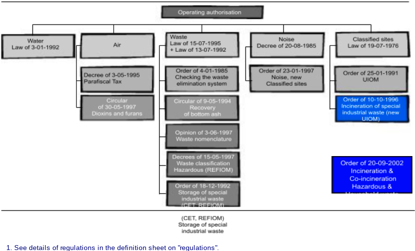
Fig. 22
Les activités de traitement de déchets ménagers peuvent engendrer des impacts non négligeables sur l’environnement. Les chapitres précédents ont abordé dans les grandes lignes ces impacts sur l’air, l’eau, le sol ainsi que les nuisances potentielles sur le cadre de vie. Pour réduire ces impacts, une réglementation lourde et complexe prévoit de nombreuses contraintes. Respecter cette réglementation n’est pas chose facile :
De plus, les attentes de la population en matière de santé publique sont croissantes : qualité de l’air, intolérance aux odeurs et au bruit, craintes sur la contamination de la chaîne alimentaire. Souvent, ces attentes dépassent le cadre de la réglementation et il convient d’anticiper sur les évolutions futures des textes de loi. Pour rassurer le voisinage et les associations, de nombreux exploitants doivent engager des actions de communication et de concertation sur la qualité environnementale des UIDD.
Les enjeux sont également financiers et juridiques : la responsabilité des entreprises est grande en cas de pollution (obligation d’indemniser et de dépolluer) et des UIDD peuvent être fermées en cas de risque d’atteinte à la santé. En résumé, pour gérer au mieux les contraintes environnementales d’une UIDD il faut :
En 1996, l’Organisation internationale de normalisation (ISO, Insurance services office) a édité un modèle de gestion des problèmes d’environnement qui puisse être reconnu par tous mondialement : les normes ISO 14000. Parmi ces normes, ISO 14001 est un référentiel d’organisation à respecter pour les entreprises qui souhaitent gérer au mieux les contraintes environnementales décrites ci-dessus.
Ces normes ne sont pas obligatoires mais correspondent à une démarche volontaire. En appliquant les règles d’ISO 14001, l’entreprise prend un triple engagement :
L’intérêt d’ISO 14001 est d’être une norme internationalement reconnue : une fois la norme respectée par l’entreprise, celle-ci peut demander à un organisme extérieur de venir vérifier à travers un audit que son organisation est conforme. L’entreprise est alors certifiée ISO 14001 et peut l’annoncer à ses clients en France et à l’international. Ce certificat ISO 14001 est une preuve de compétence en matière de gestion environnementale. C’est un atout sérieux pour gagner de nouveaux marchés d’exploitation.
La notion d’amélioration continue est présentée dans le schéma ci-dessous :
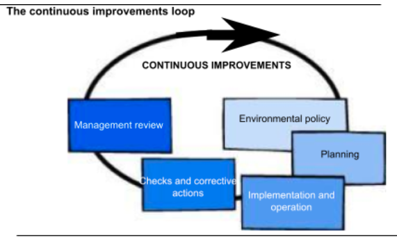
Fig. 23
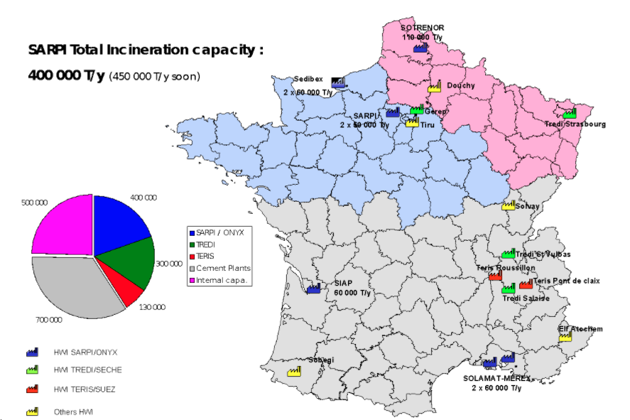
Fig. 24
Réglementation applicable aux UIDD : principaux points de l’Arrêté Ministériel Incinération du 20 septembre 2002 (entrée en vigueur le 28 décembre 2005).
Conditions de mesure Toutes les concentrations sont exprimées en mg/Nm3 sec ramenés à 11\ Les moyennes sur une demi-heure et les moyennes sur dix minutes sont déterminées pendant la période de fonctionnement effectif ( à l’exception des phases de démarrage et d’extinction, lorsqu’aucun déchet n’est incinéré) à partir des valeurs mesurées après soustraction de l’intervalle de confiance à 95 p. 100 sur chacune de ces mesures. Cet intervalle de confiance ne doit pas dépasser les pourcentages suivants des valeurs limites d’émission :
| Pollutant | Maximum confidence interval (% of emission limit value) |
|---|---|
| Carbon monoxide | 10% |
| Sulphur dioxide | 20% |
| Nitrogen dioxide | 20% |
| Total dust | 30% |
| Total organic carbon | 30% |
| Hydrogen chloride | 40% |
| Hydrogen fluoride | 40% |
Fig. 25
Les moyennes journalières sont calculées à partir de ces moyennes validées.
Pour qu’une moyenne journalière soit valide, il faut que, pour une même journée, pas plus de cinq moyennes sur une demi-heure n’aient dû être écartées pour cause de mauvais fonctionnement ou d’entretien du système de mesure en continu. Dix moyennes journalières par an peuvent être écartées au maximum pour cause de mauvais fonctionnement ou d’entretien du système de mesure en continu.
Condition de combustion Les installations d’incinération sont conçues, équipées, construites et exploitées de manière à ce que, même dans les conditions les plus défavorables que l’on puisse prévoir, les gaz résultant du processus soient portés, après la dernière injection d’air de combustion, d’une façon contrôlée et homogène, à une température de 850 ° C pendant deux secondes, mesurée à proximité de la paroi interne ou en un autre point représentatif de la chambre de combustion défini par l’arrêté préfectoral d’autorisation. Le temps de séjour devra être vérifié lors des essais de mise en service. S’il s’agit de déchets dangereux ayant une teneur en substances organiques halogénées, exprimée en chlore, supérieure à 1 p. 100, la température doit être amenée à 1100 ° C pendant au moins deux secondes. La température doit être mesurée en continu.
Chaque ligne d’incinération est équipée d’au moins un brûleur d’appoint, lequel doit s’enclencher automatiquement lorsque la température des gaz de combustion tombe en dessous de 850 ° C ou de 1100 ° C, selon le cas, après la dernière injection d’air de combustion. Ces brûleurs sont aussi utilisés dans les phases de démarrage et d’extinction afin d’assurer en permanence la température de 850 °C ou de 1100 ° C, selon le cas, pendant lesdites phases et aussi longtemps que des déchets non brûlés se trouvent dans la chambre de combustion.
Normes d'émission| Pollutants | Emission limit values — Daily mean | Emission limit values — ½ hourly mean |
|---|---|---|
| Hydrochloric acid (HCl) | 10 | 60 |
| Hydrofluoric acid (HF) | 1 | 4 |
| Sulphur oxides (SOₓ) | 50 | 200 |
| Dust | 10 | 30 |
| Carbon monoxide (CO) | 50 | 100 |
| Total Organic Compounds (TOC) | 10 | 20 |
| Nitrogen oxides (NOₓ) | 200 | 400 |
| Total metals — Sb+As+Pb+Cr+Co+Cu+Mn+Ni+V | 0.5 | — |
| Mercury (Hg) | 0.05 | — |
| Cadmium + Thallium (Cd+Tl) | 0.05 | — |
| Dioxins & furans | 0.1 ng I-TEQ | — |
Fig. 26
All values in mg/Nm³ for dry gas reduced to 11% O₂
Respect des Valeurs Limite d’EmissionsLes valeurs limites d’émission sont respectées si :
Métaux lourds : les déchets dangereux contiennent de nombreux métaux qui pour la plupart se retrouvent dans les résidus solides de combustion (mâchefers cendres volantes). Des métaux sont également présents dans les fumées majoritairement sous forme de poussières et aussi sous forme gazeuse. L’antimoine (Sb), l’arsenic (As), le plomb (Pb), le chrome (Cr), le cobalt (Co), le cuivre (Cu), le manganèse (Mn), le nickel (Ni), le vanadium (V), ainsi que le mercure (Hg), le cadmium (Cd) et le thallium (Tl).
Rappelons que les métaux lourds les plus dangereux pour la santé humaine sont le cadmium, le plomb et le mercure.
Pourquoi ces métaux sont-ils considérés comme "lourds" ?Les éléments traces sont des éléments chimiques présents en très faibles quantités dans les différents milieux (sol eau air). Parmi ces éléments traces certains sont nécessaires aux organismes vivants (plantes animaux l’homme) dans de très faibles quantités : il s’agit des oligo-éléments (exemple : zinc, cuivre, manganèse, bore, molybdène, cobalt, sélénium). Remarquons qu’à de trop grandes quantités et au-delà de certains seuils ces oligo-éléments peuvent devenir toxiques. D’autres éléments traces (plomb, cadmium, mercure, nickel, arsenic…) ne sont pas utiles aux organismes et au-delà d’un certain seuil peuvent devenir toxiques pour le milieu naturel et l’homme. Ils sont désignés communément par le terme de « métaux lourds ». Le terme « métaux lourds » généralement utilisé en langage environnemental est souvent un abus de langage car tous ces éléments ne sont pas chimiquement des métalloïdes (exemple : l’arsenic). En chimie on distingue les métaux dits lourds (à cause de leur poids effectif), des métaux légers (calcium, aluminium…), des métaux nobles (or, platine…) ou encore des métaux rares.
Dioxines et furanes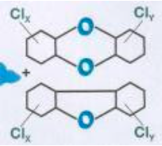
Fig. 27
Dioxines et furanes : ces deux familles de polluants se forment principalement lors de la combustion de matières contenant du chlore comme les plastiques ou certains solvants (on trouve naturellement des composés chlorés dans le bois et le charbon). Le terme « dioxine » regroupe 75 types de dioxines et 135 types de furanes. Ces dioxines ont pour faculté de s’accumuler dans les graisses et de s’éliminer très difficilement.
Formule chimique : Polychlorodibenzodioxine (PCDD) et polychlorodibenzofuranes (PCDF)La voie alimentaire constitue à 95\
Les opérations de prélèvements et d’analyses sont longues délicates et coûteuses (environ 5000 € par opération). L’évaluation normalisée de la charge toxique porte sur 17 isomères (les plus toxiques) et correspond à une moyenne pondérée des 17 toxicités d’importance inégale.
En France la contribution des Usines d’Incinération d’Ordures Ménagères (UIOM) aux émissions industrielles totales de dioxines a été évaluée à 43\
La nouvelle directive Européenne sur l’incinération des déchets (Wastes Incinération Directive WID), transposée en droit français par l’Arrêté Ministériel du 20 septembre 2002, impose à tous les incinérateurs et co-incinérateur de déchets une norme de rejet en dioxines et furanes de 0,1 I-TEQOTAN ng/Nm3 sec à 11\ Cet arrêté est applicable aux usines nouvelles immédiatement et à toutes les usines à partir du 28 décembre 2005.
Remarque : 0.1 ng/m3 = 10-10 g/m3 = 0.1 milliardième de gramme par m3. Une nouvelle usine d’incinération qui traiterait 100 000 t/an de déchets dangereux produirait moins de 1/20 de gramme de dioxines toxiques durant l’année.
Symboles chimiquesToute matière vivante (minérale, végétale, organique, qu'elle soit liquide, solide ou gazeuse) est formée d'éléments de base identifiés par un symbole internationalement reconnu.
Exemple : N : azote O : oxygène
Chacun de ces éléments de base se caractérise par une particule élémentaire qui lui est propre : son atome. Ce dernier se compose de plus petites unités, les électrons et les protons, qui détermineront les conditions d’association entre les éléments de base pour former d’autres substances.
Ainsi, dans certaines conditions de température et de pression, il y a compatibilité entre l’azote et l’oxygène pour former une nouvelle substance (NO2) ou oxyde d’azote. Comme il s’agit d’un regroupement d’éléments de base, la particule élémentaire du NO2 s’appelle molécule.
La plupart des substances, produits ou matériaux que nous utilisons chaque jour sont des regroupements d’éléments de base, mais il y a certaines exceptions : l’or, le cuivre, l’aluminium peuvent avoir des degrés de pureté assez élevés et sont des éléments de base.